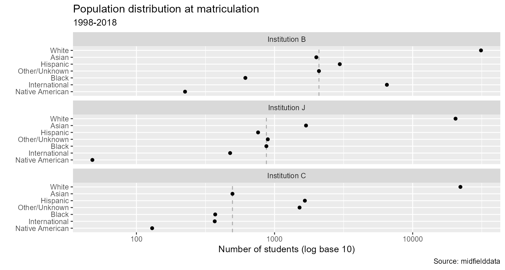

Introduction to midfieldr
Source:vignettes/articles/art-000-getting-started.Rmd
art-000-getting-started.RmdWhen working with student-level records, you should:
- Know the structure of your data
- Identify the programs to include
- Define your metrics and the relevant student blocs
- Develop the data processing steps that transform data to metrics
midfieldr provides functions that contribute to this workflow in three ways:
- Subsetting data frames in a MIDFIELD-tailored fashion.
- Adding decision variables to data frames for retaining records that satisfy constraints.
- Conditioning data frames for specific tasks.
midfielddata contributes to this workflow by providing data sets suitable for learning and practicing basic data skills in manipulating student-level records. midfielddata also serves as a model database for registrar’s data in general. midfielddata are not, however, suitable for drawing inferences about program attributes or student experiences—midfielddata is for practice, not research.
If you are writing your own script to follow along, we use these packages in this article:
We use a couple of other packages as well for incidental tasks. We will load them at the point of use.
Data structure
CIP data. Classification of Instructional Programs (CIP) is a taxonomy of academic programs, encoded by 6-digit numeric codes curated by the US Department of Education (NCES 2010).
The 2010 codes are loaded with midfieldr. cip contains
codes and names for 1582 instructional programs organized on three
levels: a 2-digit series, a 4-digit series, and a 6-digit series.
CIP data are documented in ?cip.
# View data set
cip
#> Index: <cip6>
#> cip2 cip2name cip4
#> <char> <char> <char>
#> 1: 01 Agriculture, Agricultural Operations and Related Sciences 0100
#> 2: 01 Agriculture, Agricultural Operations and Related Sciences 0101
#> 3: 01 Agriculture, Agricultural Operations and Related Sciences 0101
#> ---
#> 1580: 54 History 5401
#> 1581: 54 History 5401
#> 1582: 99 NonIPEDS - Undecided, Unspecified 9999
#> cip4name cip6
#> <char> <char>
#> 1: Agriculture, General 010000
#> 2: Agricultural Business and Management 010101
#> 3: Agricultural Business and Management 010102
#> ---
#> 1580: History 540108
#> 1581: History 540199
#> 1582: NonIPEDS - Undecided, Unspecified 999999
#> cip6name
#> <char>
#> 1: Agriculture, General
#> 2: Agricultural Business and Management, General
#> 3: Agribusiness, Agricultural Business Operations
#> ---
#> 1580: Military History
#> 1581: History, Other
#> 1582: NonIPEDS - Undecided, Unspecifiedcip is a “data.table” class of data frame (a format we
use throughout midfieldr and midfielddata). The data.table “enhanced
data.frame” is designed for fast manipulation of large data sets.
# Reveal the data.table class
class(cip)
#> [1] "data.table" "data.frame"Users can transform a data.table to a base R data.frame or a tidyverse tibble easily enough if they prefer.
# Base R
cip_DF <- as.data.frame(cip)
class(cip_DF)
#> [1] "data.frame"
# Tidyverse tibble
library(tibble)
cip_tbl <- as_tibble(cip)
class(cip_tbl)
#> [1] "tbl_df" "tbl" "data.frame"Student-records data. midfielddata is an R data package containing a sample of the larger MIDFIELD database (Ohland 2023). midfieldr is designed to work with either database, as both are organized in four data tables (student, course, term, and degree) and have variable names in common.
| Table | Each row is | N students | N rows | N columns | Mb memory |
|---|---|---|---|---|---|
| course | one student per course per term | 97,555 | 3,289,532 | 12 | 324.3 |
| term | one student per term | 97,555 | 639,915 | 13 | 72.8 |
| student | one student | 97,555 | 97,555 | 13 | 17.3 |
| degree | one student per degree | 49,543 | 49,665 | 5 | 5.2 |
Data tables from midfielddata can be loaded individually or collectively as needed.
Resources. If you are new to these data, the best place to start is the following articles at the midfielddata website:
Data dictionaries are documented in
?student,?course,?term, and?degree.MIDFIELD data structure. We examine the structure of the four data tables in midfielddata: number of observations, number and class of variables, representative values, and database keys.
Data linked by student ID. To examine the variables and some representative values in midfielddata, we take a closer look at the records of individual students across the four data tables.
Subset CIP data with filter_cip()
filter_cip() acts on the cip data frame to
select rows that match case-independent search terms, including regular
expressions.
# Sociology program codes
filter_cip("sociology")
#> cip2 cip2name cip4 cip4name cip6
#> <char> <char> <char> <char> <char>
#> 1: 45 Social Sciences 4511 Sociology 451101
#> 2: 45 Social Sciences 4513 Sociology and Anthropology 451301
#> 3: 45 Social Sciences 4514 Rural Sociology 451401
#> cip6name
#> <char>
#> 1: Sociology
#> 2: Sociology and Anthropology
#> 3: Rural Sociology
# All music-related programs
filter_cip("music")
#> cip2 cip2name cip4
#> <char> <char> <char>
#> 1: 13 Education 1313
#> 2: 36 Leisure and Recreational Activities 3601
#> 3: 39 Theological Studies and Religious Vocations 3905
#> ---
#> 23: 50 Visual and Performing Arts 5009
#> 24: 50 Visual and Performing Arts 5010
#> 25: 51 Health Professions and Related Clinical Sciences 5123
#> cip4name
#> <char>
#> 1: Teacher Education and Professional Development, Specific Subject Areas
#> 2: Leisure and Recreational Activities
#> 3: Religious, Sacred Music
#> ---
#> 23: Music
#> 24: Arts, Entertainment and Media Management
#> 25: Rehabilitation and Therapeutic Professions
#> cip6 cip6name
#> <char> <char>
#> 1: 131312 Music Teacher Education
#> 2: 360115 Music
#> 3: 390501 Religious, Sacred Music
#> ---
#> 23: 500999 Music, Other
#> 24: 501003 Music Management
#> 25: 512305 Music Therapy, TherapistHaving started a search, multiple passes are often need to narrow the search results.
# data.table printout option
options(datatable.print.topn = 20)
# First pass
first_pass <- filter_cip("music")
# Use the first pass as input to the second pass, select columns
filter_cip("^50",
cip = first_pass,
select = c("cip6", "cip6name")
)
#> cip6 cip6name
#> <char> <char>
#> 1: 500102 Digital Arts
#> 2: 500509 Musical Theatre
#> 3: 500901 Music, General
#> 4: 500902 Music History, Literature and Theory
#> 5: 500903 Music Performance, General
#> 6: 500904 Music Theory and Composition
#> 7: 500905 Musicology and Ethnomusicology
#> 8: 500906 Conducting
#> 9: 500907 Piano and Organ
#> 10: 500908 Voice and Opera
#> 11: 500909 Music Management and Merchandising
#> 12: 500910 Jazz, Jazz Studies
#> 13: 500911 Violin, Viola, Guitar and Other Stringed Instruments
#> 14: 500912 Music Pedagogy
#> 15: 500913 Music Technology
#> 16: 500914 Brass Instruments
#> 17: 500915 Woodwind Instruments
#> 18: 500916 Percussion Instruments
#> 19: 500999 Music, Other
#> 20: 501003 Music Management
#> cip6 cip6name
#> <char> <char>
# restore original data.table printout option
options(datatable.print.topn = 3)We develop these concepts further in Programs.
Subset student-level data with select_required()
select_required() selects key columns as well as all
columns required by other midfieldr functions. Operates on a data frame
to retain columns having names that match or partially match default
search terms. Rows are unaffected.
Term records are significantly more compact if we select this minimum set of columns.
# Select variables required by midfieldr functions
select_required(term)
#> mcid institution term cip6 level
#> <char> <char> <char> <char> <char>
#> 1: MCID3111142225 Institution B 19881 140901 01 First-year
#> 2: MCID3111142283 Institution J 19881 240102 01 First-year
#> 3: MCID3111142283 Institution J 19883 240102 01 First-year
#> ---
#> 639913: MCID3112898894 Institution B 20181 451001 01 First-year
#> 639914: MCID3112898895 Institution B 20181 302001 01 First-year
#> 639915: MCID3112898940 Institution B 20181 050103 01 First-yearWe can include additional columns if we need them.
# Select additional columns
select_required(term, select_add = c("gpa_term"))
#> mcid institution term cip6 level gpa_term
#> <char> <char> <char> <char> <char> <num>
#> 1: MCID3111142225 Institution B 19881 140901 01 First-year 2.56
#> 2: MCID3111142283 Institution J 19881 240102 01 First-year 1.85
#> 3: MCID3111142283 Institution J 19883 240102 01 First-year 1.93
#> ---
#> 639913: MCID3112898894 Institution B 20181 451001 01 First-year 3.52
#> 639914: MCID3112898895 Institution B 20181 302001 01 First-year 3.50
#> 639915: MCID3112898940 Institution B 20181 050103 01 First-year 2.18Regular expressions can be used.
# Add columns using a regular expression
select_required(term, select_add = c("^gpa"))
#> mcid institution term cip6 level gpa_term
#> <char> <char> <char> <char> <char> <num>
#> 1: MCID3111142225 Institution B 19881 140901 01 First-year 2.56
#> 2: MCID3111142283 Institution J 19881 240102 01 First-year 1.85
#> 3: MCID3111142283 Institution J 19883 240102 01 First-year 1.93
#> ---
#> 639913: MCID3112898894 Institution B 20181 451001 01 First-year 3.52
#> 639914: MCID3112898895 Institution B 20181 302001 01 First-year 3.50
#> 639915: MCID3112898940 Institution B 20181 050103 01 First-year 2.18
#> gpa_cumul
#> <num>
#> 1: 2.56
#> 2: 1.85
#> 3: 1.90
#> ---
#> 639913: 3.52
#> 639914: 3.50
#> 639915: 2.18Add decision variables with add_timely_term()
add_timely_term() adds a new variable (plus supporting
variables) for the term in which a student is expected to complete their
program in a timely manner. This variable is used to make decisions
about including or excluding records due to data sufficiency and whether
or not a graduate is counted as a timely or late completer. Timely term
is required for both add_data_sufficiency() and
add_completion_status().
# Initialize the working data frame using term
DT <- term[, .(mcid)]
# Retain a unique set of IDs
DT <- unique(DT)
# Add variables relating to the timely term
DT <- add_timely_term(DT, term)
# View the result
DT
#> mcid term_i level_i adj_span timely_term
#> <char> <char> <char> <num> <char>
#> 1: MCID3111142225 19881 01 First-year 6 19933
#> 2: MCID3111142283 19881 01 First-year 6 19933
#> 3: MCID3111142290 19881 01 First-year 6 19933
#> ---
#> 97553: MCID3112898894 20181 01 First-year 6 20233
#> 97554: MCID3112898895 20181 01 First-year 6 20233
#> 97555: MCID3112898940 20181 01 First-year 6 20233We develop this concept further in the Data sufficiency article, Timely term section.
Add decision variables with add_data_sufficiency()
add_data_sufficiency() adds a new variable (plus
supporting variables) for data sufficiency status.
# Retain a minimum number of variables
DT <- DT[, .(mcid, timely_term)]
# Add variables relating to data sufficiency
DT <- add_data_sufficiency(DT, term)
# View the result
DT[order(data_sufficiency)]
#> mcid timely_term term_i lower_limit upper_limit
#> <char> <char> <char> <char> <char>
#> 1: MCID3111142225 19933 19881 19881 20181
#> 2: MCID3111142283 19933 19881 19881 20096
#> 3: MCID3111142290 19933 19881 19881 20096
#> ---
#> 97553: MCID3112785480 20123 20071 19901 20154
#> 97554: MCID3112800920 20153 20101 19881 20181
#> 97555: MCID3112870009 20003 19951 19881 20181
#> data_sufficiency
#> <char>
#> 1: exclude-lower
#> 2: exclude-lower
#> 3: exclude-lower
#> ---
#> 97553: include
#> 97554: include
#> 97555: includeWe develop these concepts further in Data sufficiency article.
Add decision variables with
add_completion_status()
add_completion_status() adds a new variable (plus
supporting variables) for program completion status.
# Retain a minimum number of variables
DT <- DT[, .(mcid, timely_term, data_sufficiency)]
# Add variables relating to completion status
DT <- add_completion_status(DT, degree)
# View the result
DT[order(completion_status)]
#> mcid timely_term data_sufficiency term_degree
#> <char> <char> <char> <char>
#> 1: MCID3111143001 19933 exclude-lower 19993
#> 2: MCID3111144032 19933 exclude-lower 19943
#> 3: MCID3111145257 19933 exclude-lower 19953
#> ---
#> 97553: MCID3112898894 20233 exclude-upper <NA>
#> 97554: MCID3112898895 20233 exclude-upper <NA>
#> 97555: MCID3112898940 20233 exclude-upper <NA>
#> completion_status
#> <char>
#> 1: late
#> 2: late
#> 3: late
#> ---
#> 97553: <NA>
#> 97554: <NA>
#> 97555: <NA>Note we have not yet excluded any student records. We still have the 97,555 unique students from midfielddata.
We develop these concepts further in Graduates.
Decisions
The data sufficiency criterion is nearly always imposed. We retain the records labeled “include”.
# Retain a minimum number of variables
DT <- DT[, .(mcid, data_sufficiency, completion_status)]
DT <- unique(DT)
# Filter for data sufficiency
DT <- DT[data_sufficiency == "include"]
# View the result
DT
#> mcid data_sufficiency completion_status
#> <char> <char> <char>
#> 1: MCID3111142689 include timely
#> 2: MCID3111142782 include timely
#> 3: MCID3111142881 include timely
#> ---
#> 76873: MCID3112785480 include <NA>
#> 76874: MCID3112800920 include <NA>
#> 76875: MCID3112870009 include <NA>The number of students has dropped to 76,875. When the timely completion criterion is imposed, we retain the records labeled “timely”.
# Filter for timely completion
DT <- DT[completion_status == "timely"]
DT <- unique(DT)
# View the result
DT
#> mcid data_sufficiency completion_status
#> <char> <char> <char>
#> 1: MCID3111142689 include timely
#> 2: MCID3111142782 include timely
#> 3: MCID3111142881 include timely
#> ---
#> 40438: MCID3112692944 include timely
#> 40439: MCID3112694738 include timely
#> 40440: MCID3112730841 include timelyThe number of students has dropped to 40,440.
Next steps
Having filtered our set of student records to satisfy the constraints of data sufficiency and timely completion, we typically omit all variables except ID and use this data frame of IDs as the baseline for the next step of the analysis.
# Retain ID only
DT <- DT[, .(mcid)]
# Ensure unique IDs
DT <- unique(DT)
# View the result
DT
#> mcid
#> <char>
#> 1: MCID3111142689
#> 2: MCID3111142782
#> 3: MCID3111142881
#> ---
#> 40438: MCID3112692944
#> 40439: MCID3112694738
#> 40440: MCID3112730841Condition data for imputation with prep_fye_mice()
One of the most common (though flawed) program metrics is “graduation rate”, roughly defined as the ratio of the number of timely completers to the number of starters in a major. However, some engineering programs require that students enroll in a First-Year Engineering (FYE) program (CIP “140102”) before they can enroll in their preferred, degree-granting, engineering major.
To credibly assign FYE students to a “starting” major, we introduce
the idea of “FYE proxies”—estimates of the 6-digit CIP codes of the
degree-granting engineering programs that FYE students would have
declared had they not been required to enroll in FYE.
prep_fye_mice() estimates some of the FYE proxies, treats
the remainder as missing values, and conditions the data frame for
imputation using the mice R package.
# Condition data for imputation by mice
prep_fye_mice(student, term)
#> mcid race sex institution proxy
#> <char> <fctr> <fctr> <fctr> <fctr>
#> 1: MCID3111190643 Asian Female Institution J <NA>
#> 2: MCID3111190747 Asian Female Institution J <NA>
#> 3: MCID3111288144 Asian Female Institution J <NA>
#> ---
#> 5787: MCID3112328635 White Male Institution J 143501
#> 5788: MCID3112328655 White Male Institution J 143501
#> 5789: MCID3112382784 White Male Institution J 143501The function returns one row per FYE student keyed by student ID. All
variables except ID are returned as factors to meet the requirements of
mice(). The NA values in the proxy column are the unknowns
CIP 6-digit codes to be imputed.
We develop these concepts further in FYE proxies.
Condition data for multiway charts with
order_multiway()
In working with longitudinal student-level records, we regularly encounter data structured as multiway data. The basic structure of multiway data is:
- a categorical variable with \small m levels
- a categorical variable (independent of the first variable) with \small n levels
- a quantitative variable (the response) of length \small m \times n with a value of the response for each combination of categorical levels
For example, from the student data table, if we count
the number of students at matriculation by race/ethnicity and
institution, the resulting data structure is:
- category 1: institution with 3 levels
- category 2: race/ethnicity with 7 levels
- quantitative response: N students with 21 observations
# Extract two columns from student
DT <- student[, .(inst = institution, race_ethn = race)]
# Count by race/ethnicity and institution
DT <- DT[, .N, by = c("inst", "race_ethn")]
# Convert integer N to numeric N
DT[, N := as.double(N)]
# Order the rows for viewing
setorderv(DT, c("inst", "race_ethn"))
# View the result
DT
#> inst race_ethn N
#> <char> <char> <num>
#> 1: Institution B Asian 2007
#> 2: Institution B Black 615
#> 3: Institution B Hispanic 2968
#> ---
#> 19: Institution J Native American 48
#> 20: Institution J Other/Unknown 894
#> 21: Institution J White 20441order_multiway() conditions such data for plotting in a
multiway chart, a set of faceted dot charts. The categorical
variables are converted to factors with levels ordered by the response
variable. This ordering creates the row and panel ordering that is so
crucial to the visual perception of effects in a multiway chart.
# Order the categorical variables by the median of the response
DT_multiway <- order_multiway(DT,
quantity = "N",
categories = c("inst", "race_ethn"),
method = "median"
)
# View result
DT_multiway
#> inst race_ethn N inst_median race_ethn_median
#> <fctr> <fctr> <num> <num> <num>
#> 1: Institution B Asian 2007 2097 1690
#> 2: Institution B Black 615 2097 615
#> 3: Institution B Hispanic 2968 2097 1658
#> ---
#> 19: Institution J Native American 48 873 130
#> 20: Institution J Other/Unknown 894 873 1518
#> 21: Institution J White 20441 873 22169order_multiway() adds variables documenting the median
values used to order each of the categories. This ordering contributes
to the row and panel order in the faceted chart we plot below.
library(ggplot2)
ggplot(DT_multiway, aes(x = N, y = race_ethn)) +
facet_wrap(vars(inst), ncol = 1, as.table = FALSE) +
geom_vline(aes(xintercept = inst_median),
linetype = 2,
color = "darkgray"
) +
scale_x_log10() +
labs(
x = "Number of students (log base 10)",
y = "",
title = "Population distribution at matriculation",
subtitle = "1998-2018",
caption = "Source: midfielddata"
) +
geom_point()
The vertical references lines are the median value by race/ethnicity at the institution. We use a log-base-10 scale because of the orders of magnitude difference in values. Observations:
- Inst. B: International students in greater numbers than expected
- Inst. J: Hispanic students in fewer numbers than expected
- Inst. B and C: Asian students in fewer numbers than expected
By greater or fewer “than expected”, we mean in comparison to their overall numbers across all institutions.
We develop these concepts further in Multiway data and charts.
Reusable code
Preparation. The immediate prerequisites or “intake” required by the reusable code chunk are the source data tables.
# Load source data (as needed)
data(student, course, term, degree)Initial data processing. A summary code chunk for ready reference.
# Optional. Copy of source files with all variables
source_student <- copy(student)
source_course <- copy(course)
source_term <- copy(term)
source_degree <- copy(degree)
# Optional. Select variables required by midfieldr functions
student <- select_required(source_student)
course <- select_required(source_course)
term <- select_required(source_term)
degree <- select_required(source_degree)The copy() function ensures that “by-reference” changes
to the working copies have no effect on the source copies we set aside.
For example, editing student will have no effect on
source_student. Thus the variables in the source material
are always available if we need them. Concepts of data.table “reference
semantics” are discussed further in (Dowle and Srinivasan
2022).
◁ midfieldr ▲ top of page Case study goals ▷